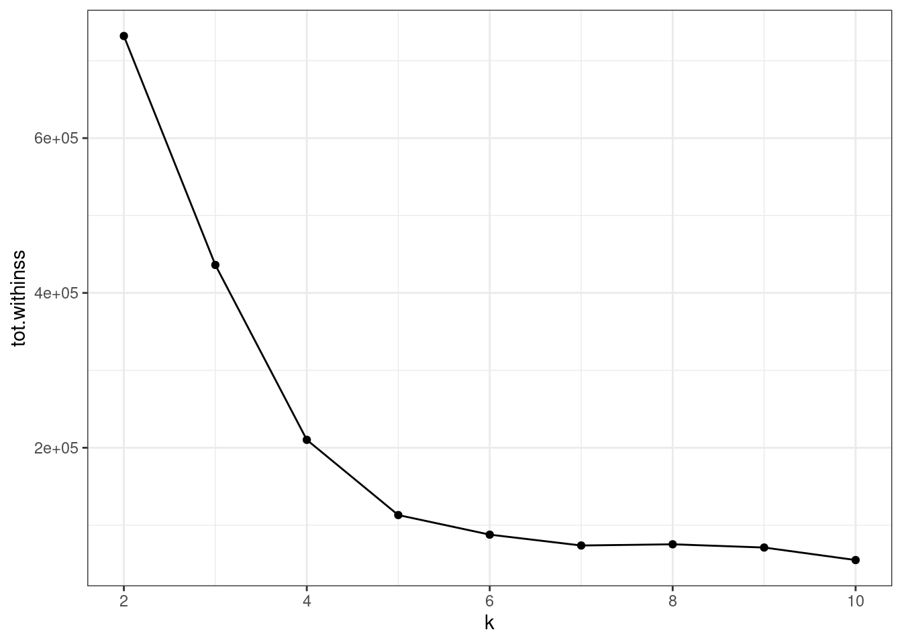
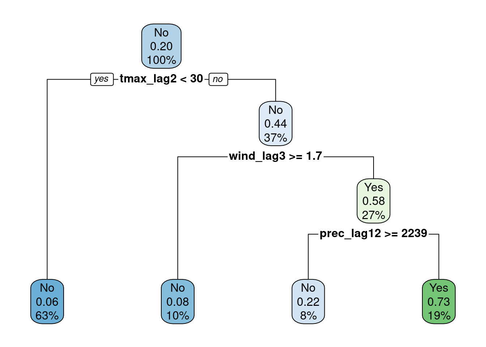

Dengue AI
Home
Data
Cluster analysis
Modeling
Software
Publications
Exported data
Presentations
Summary
Modeling
Overview
Data
Dengue data
Overview
Raw files
Case classification analysis
Missing data analysis
Imputation
Export aggregated database
Weather data
Socio economic data
Bundled data
Cluster analysis
Overview
Univariate
Long time series
Raw cases
Raw cases, cumulative
Scaled cases
Scaled cases, cumulative
SDTW, cumulative and scaled long time series
Time series features
Hierarchical clustering
Municipality/year time series
Yearly time series
Cumulative time series
Epi year time series
Multivariate
Cases and climate variables multivariate clustering
Climate variables multivariate clustering
Modeling
Overview
Denque and weather lags
Dengue case classification
Dengue time series modelling
Global and subset models workflow
Univariate models
SBD clustering
Time series features clustering
Time series features clustering, with robust sparse k-means
Multivariate models
Multivariate clustering, all data model
Multivariate clustering, climate model
Software
Publications
Exported data
Presentations
Overview
Project presentation
Project presentation, short version
A trajectory on health data and information
Publications
Overview
In this section there are notebooks for dengue modelling.
Order By
Default
Title
Date - Oldest
Date - Newest
Author
Datasets
Datasets…
February 12, 2024 | 09:14:00 +01:00
Raphael Saldanha
Model simplified reference dataset
February 12, 2024 | 09:10:51 +01:00
Raphael Saldanha
Exploratory Data Analysis
Variable type: character
February 8, 2024 | 11:57:38 +01:00
Raphael Saldanha
Dengue case classification
by symptoms and clinical condition
The objective of this notebook is to train a model to…
February 8, 2024 | 10:54:45 +01:00
Raphael Saldanha
Multivariate clustering, all data model
This notebooks aims to reproduce the methodology of the paper submitted to the SBD2023 conference, implementing the global and subset modelling with a multivariate approach.
February 1, 2024 | 09:05:51 +01:00
Raphael Saldanha
Denque and weather lags
This notebook…
January 25, 2024 | 15:18:06 +01:00
Raphael Saldanha

Time series features clustering
This notebooks aims to implement the global and subset modelling, adopting a clustering strategy based on time series features extraction, with the
{tsfeatures}
package.
December 1, 2023 | 09:07:18 +01:00
Raphael Saldanha
SBD clustering
This notebooks aims to reproduce the metodology of the paper submitted to the SBD2023 conference, implementing the global and subset modelling.
December 1, 2023 | 09:07:18 +01:00
Raphael Saldanha
Regression task
This notebook models the relationship between dengue cases and weather variables using the nominal value of dengue cases.
December 1, 2023 | 09:07:18 +01:00
Raphael Saldanha
Dengue case classification
by symptoms and clinical condition
The objective of this notebook is to predict a dengue suspected case based on its symptoms, clinical conditions and other patient related variables.
December 1, 2023 | 09:07:18 +01:00
Raphael Saldanha

Classification task
This notebook models the relationship between dengue cases and weather variables using a classification of dengue cases as outbreak level (anomaly) or base level.
December 1, 2023 | 09:07:18 +01:00
Raphael Saldanha
Time series features clustering, with robust sparse k-means
This notebooks aims to implement the global and subset modelling, adopting a clustering strategy based on time series features extraction, with the
{tsfeatures}
package.
December 1, 2023 | 09:07:18 +01:00
Raphael Saldanha
Multivariate clustering, climate model
This notebooks aims to reproduce the methodology of the paper submitted to the SBD2023 conference, implementing the global and subset modelling with a multivariate approach.
December 1, 2023 | 09:07:18 +01:00
Raphael Saldanha
Global and subset models workflow
December 1, 2023 | 09:07:18 +01:00
Raphael Saldanha
No matching items
Back to top
Climate variables multivariate clustering
Denque and weather lags